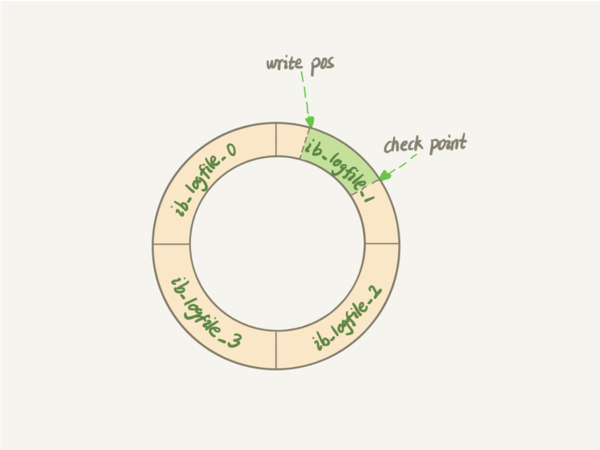
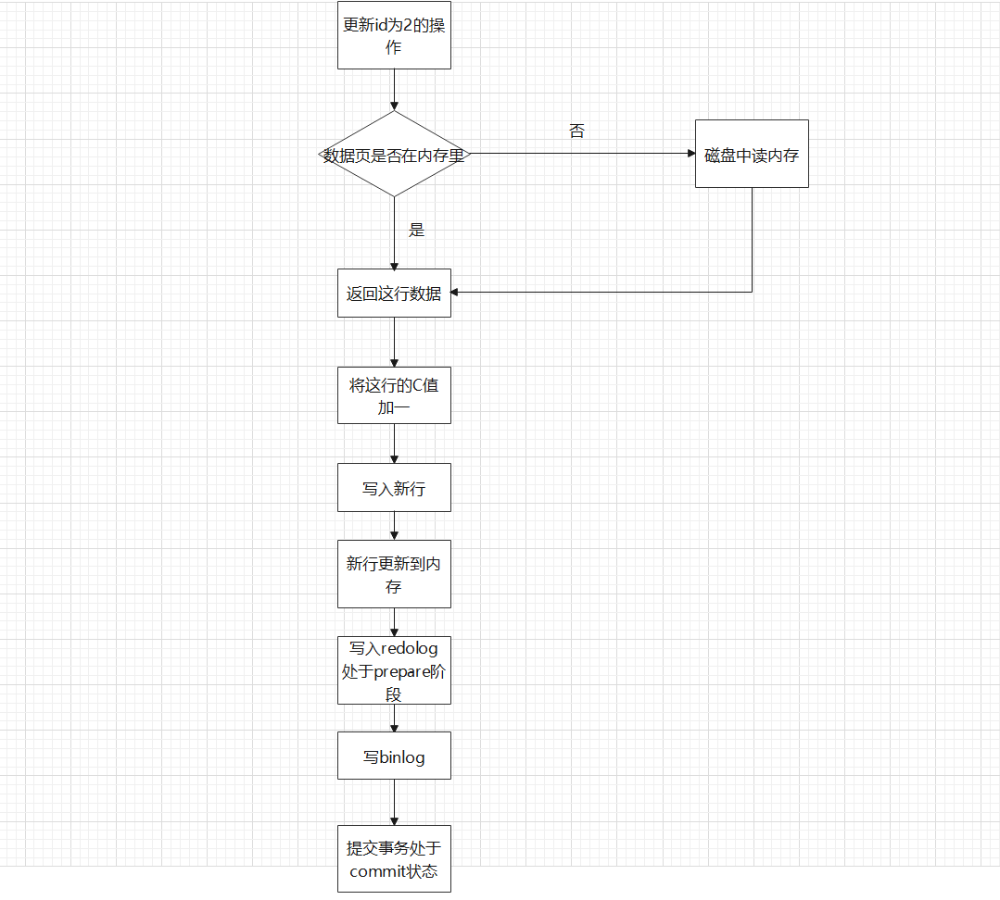
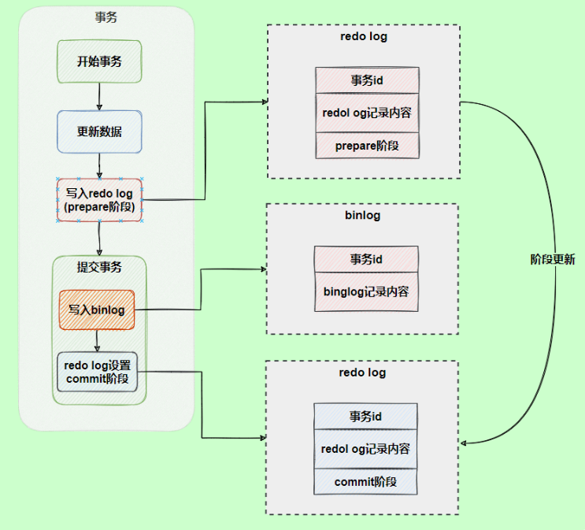
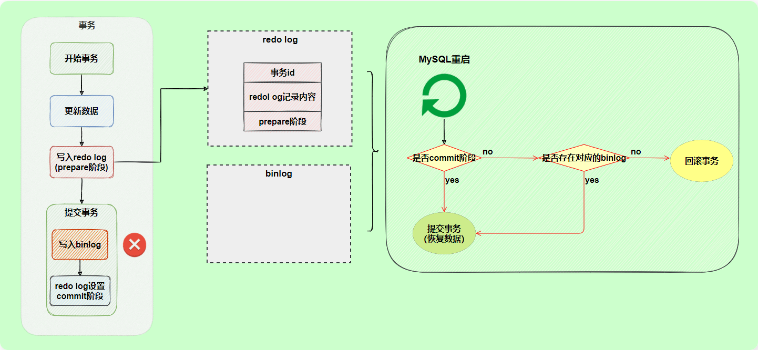
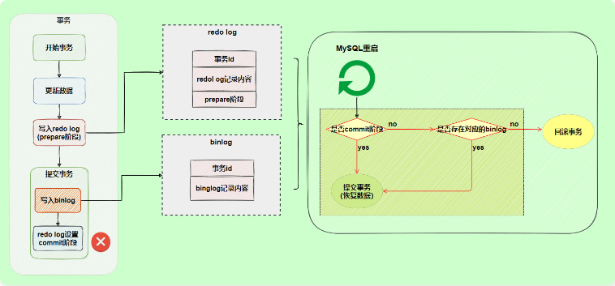

MySQL三大日志
MySQL三大日志(bin log 、redo log、undo log)
MySQL日志分类
MySQL 日志 主要包括错误日志、查询日志、慢查询日志、事务日志、二进制日志几大类。其中，比较重要的还要属二进制日志 binlog（归档日志）和事务日志 redo log（重做日志）和 undo log（回滚日志）。

redo log(崩溃恢复)
redolog(物理日志)是InnoDB数据库引擎独有的，它让数据库具有了崩溃恢复的能力
比如：mysql因为意外导致服务宕机或者挂掉，重启时，InnoDB引擎会重新加载redo log恢复数据，保证了数据库完整性与持久性

刷盘时机(刷盘策略)
InnoDB存储引擎为redo log刷盘提供了innodb_flush_log_at_trx_commit参数，它支持三种策略
0：设置为 0 的时候，表示每次事务提交时不进行刷盘操作
1：设置为 1 的时候，表示每次事务提交时都将进行刷盘操作（默认值）
2：设置为 2 的时候，表示每次事务提交时都只把 redo log buffer 内容写入 page cache
默认是1：也就是说当事务提交时会调用 fsync 对 redo log 进行刷盘
另外，InnoDB 存储引擎有一个后台线程，每隔1 秒，就会把 redo log buffer 中的内容写到文件系统缓存（page cache），然后调用 fsync 刷盘。
可能一个没有提交事务的rodo log记录也有可能会被刷盘

日志文件组
硬盘上存储的 redo log 日志文件不只一个，而是以一个日志文件组的形式出现的，每个的redo日志文件大小都是一样的。
比如可以配置为一组4个文件，每个文件的大小是 1GB，整个 redo log 日志文件组可以记录4G的内容。
它采用的是环形数组形式，从头开始写，写到末尾又回到头循环写，如下图所示。

在个日志文件组中还有两个重要的属性，分别是 write pos、checkpoint
- write pos 是当前记录的位置，一边写一边后移
- checkpoint 是当前要擦除的位置，也是往后推移
每次刷盘 redo log 记录到日志文件组中，write pos 位置就会后移更新。
每次 MySQL 加载日志文件组恢复数据时，会清空加载过的 redo log 记录，并把 checkpoint 后移更新。
write pos 和 checkpoint 之间的还空着的部分可以用来写入新的 redo log 记录。

bin log(物理日志)
bin log是逻辑日志，存在于service层，记录内容是语句的原始逻辑，类似于给id=2这行字段c加一
不管用什么存储引擎，只要发生了表数据更新，都会产生 binlog 日志。
可以说MySQL数据库的数据备份、主备、主主、主从都离不开binlog，需要依靠binlog来同步数据，保证数据一致性。
mysql执行一条更新语句时的流程
1 | update user set C=2 where id = 1; |

两阶段提交(解决日志逻辑不一样的问题)
redo log（重做日志）让InnoDB存储引擎拥有了崩溃恢复能力。
binlog（归档日志）保证了MySQL集群架构的数据一致性。
虽然它们都属于持久化的保证，但是侧重点不同。
在执行更新语句过程，会记录redo log与binlog两块日志，以基本的事务为单位，redo log在事务执行过程中可以不断写入，而binlog只有在提交事务时才写入，所以redo log与binlog的写入时机不一样。
例如:
1 | update user set C=2 where id = 1; |
如果MySQL此时发生宕机，执行时写入redo log成功，而写入bin log失败，此时数据恢复时会发生数据不一致的情况
将redo log的写入拆成了两个步骤prepare和commit，这就是两阶段提交。

使用两阶段提交模式，在prepare阶段发生异常不会导致数据不一致情况，因为事务还没有提交，没有对应的bin日志，会事务回滚

如果在commit阶段发生异常，是不会回滚事务，但是有对应的bin log，mysql认为数据是完整的，此时会重新提交并恢复数据

undolog(回滚日志)
使事务具有原子性，就要在数据库执行异常时，进行事务的回滚，在MySQL中保持事务原子性操作是通过回滚日志进行实现的
如果执行过程中遇到异常的话，我们直接利用 回滚日志 中的信息将数据回滚到修改之前的样子即可！并且，回滚日志会先于数据持久化到磁盘上。这样就保证了即使遇到数据库突然宕机等情况，当用户再次启动数据库的时候，数据库还能够通过查询回滚日志来回滚将之前未完成的事务。